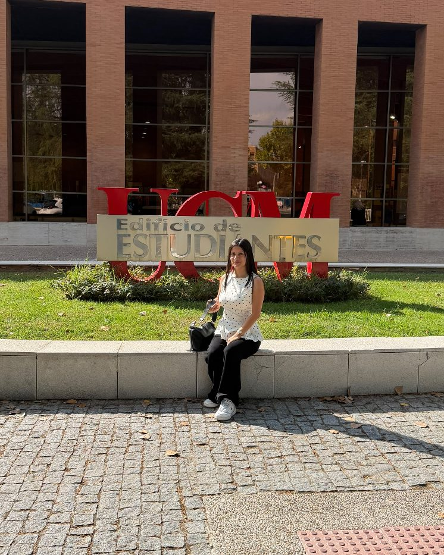
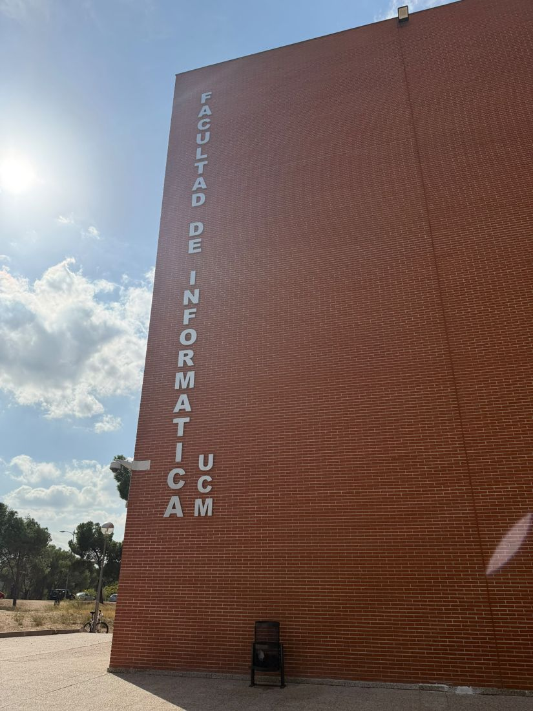
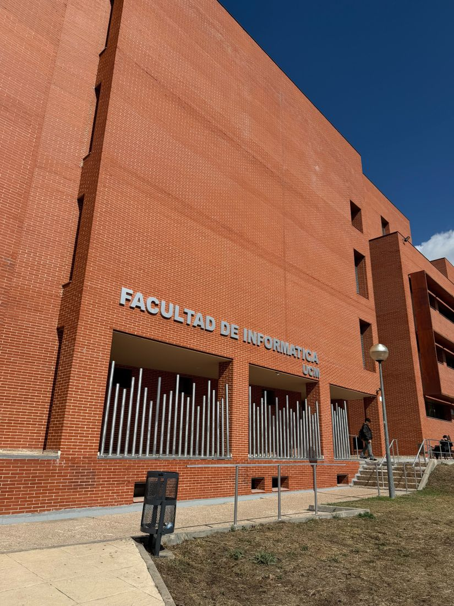
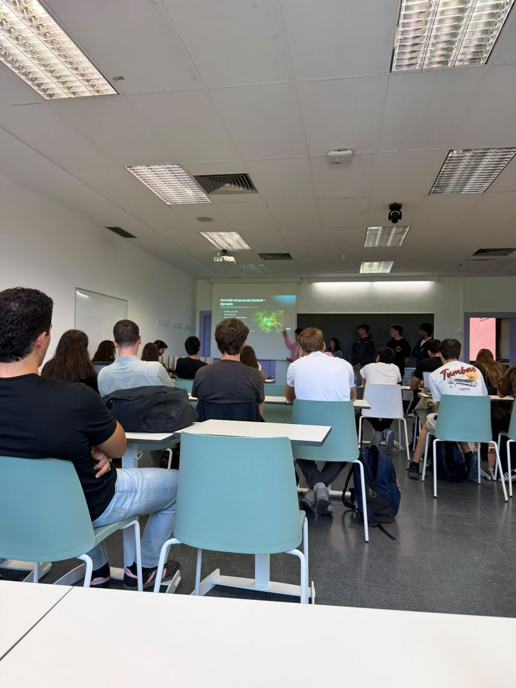
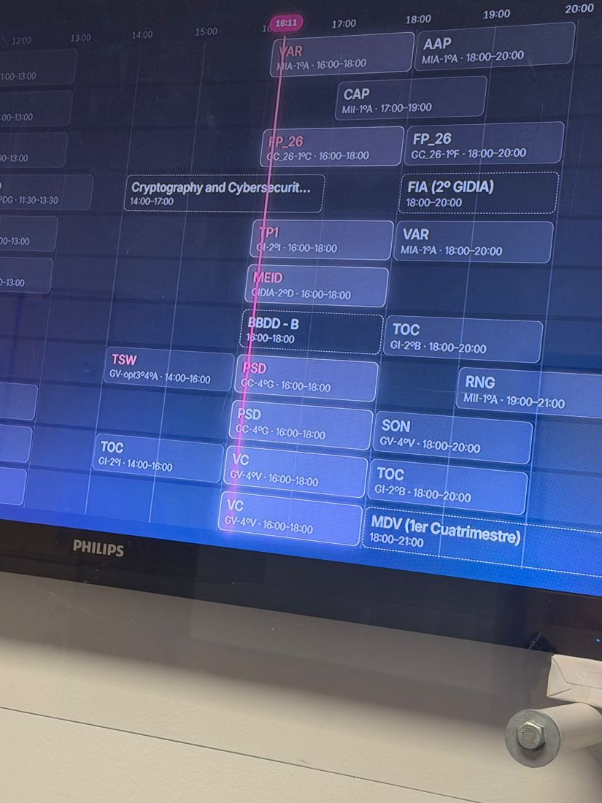

Consejos reales para los que vienen detrás: cómo pasar los cursos difíciles, qué esperar de las prácticas… y cómo terminé estudiando en la Universidad Complutense de Madrid.


Facultad de Informática · UCM
Soy Almendra Nicolle, estudiante de noveno ciclo de Ingeniería de Sistemas e Informática. Como muchos, tuve cursos que me hicieron dudar, y el más fuerte fue Arquitectura de Software. Pero aquí sigo, a un paso de terminar.
En el camino hice mis prácticas preprofesionales en la DIREPRO de Chimbote, en el área administrativa, y viví una pasantía internacional en la Universidad Complutense de Madrid, donde llevé cursos de mi carrera.
Creé este blog para contar lo que me hubiera gustado saber en primer ciclo. Si estás empezando, esto es para ti.
Nadie llega sabiendo. Practica un poco cada día y apóyate en tus compañeros: los grupos de estudio salvan cursos.
Movilidades, pasantías y concursos. Así llegué a Madrid: revisando las convocatorias de mi universidad.
No descartes un área por no ser "de programación". Entender cómo trabaja una organización también es ingeniería.
la experiencia que cambió mi carrera ✈



Realicé una pasantía internacional en la Universidad Complutense de Madrid (UCM), una de las universidades más grandes y antiguas de España.
En la Facultad de Informática llevé cursos relacionados con mi carrera, compartí aulas con estudiantes de distintos países y aprendí a desenvolverme sola en una ciudad nueva.
“Salir de tu zona de confort es la mejor clase que vas a llevar.”
cargando entradas…
Cerrando los últimos cursos y pensando en lo que viene.
Apoyo en el área administrativa y en la organización de procesos.
Cursos relacionados con Ingeniería de Sistemas e Informática en España.
El curso más fuerte de la carrera, y el que más me enseñó a pensar en sistemas completos.
Ingresé a Ingeniería de Sistemas e Informática con muchas dudas y muchas ganas.